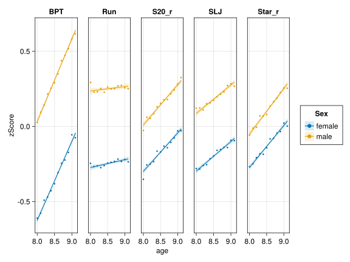

Code
using Arrow
using AlgebraOfGraphics
using CairoMakie # for displaying static plots
using DataFrames
using Statistics
using StatsBase
using SMLP2023: dataset
CairoMakie.activate!(; type="svg") # use SVG (other options include PNG)Phillip Alday, Douglas Bates, and Reinhold Kliegl
2023-09-09
This notebook shows creating a multi-panel plot similar to Figure 2 of Fühner et al. (2021).
The data are available from the SMLP2023 example datasets.
Arrow.Table with 525126 rows, 7 columns, and schema:
:Cohort String
:School String
:Child String
:Sex String
:age Float64
:Test String
:score Float64The response to be plotted is the mean score by Test and Sex and age, rounded to the nearest 0.1 years.
The first task is to round the age to 1 digit after the decimal place, which can be done with select applied to a DataFrame. In some ways this is the most complicated expression in creating the plot so we will break it down. select is applied to DataFrame(dat), which is the conversion of the Arrow.Table, dat, to a DataFrame. This is necessary because an Arrow.Table is immutable but a DataFrame can be modified.
The arguments after the DataFrame describe how to modify the contents. The first : indicates that all the existing columns should be included. The other expression can be pairs (created with the => operator) of the form :col => function or of the form :col => function => :newname. (See the documentation of the DataFrames package for details.)
In this case the function is an anonymous function of the form round.(x, digits=1) where “dot-broadcasting” is used to apply to the entire column (see this documentation for details).
transform!(df, :age, :age => (x -> x .- 8.5) => :a1) # centered age (linear)
select!(groupby(df, :Test), :, :score => zscore => :zScore) # z-score
tlabels = [ # establish order and labels of tbl.Test
"Run" => "Endurance",
"Star_r" => "Coordination",
"S20_r" => "Speed",
"SLJ" => "PowerLOW",
"BPT" => "PowerUP",
];The next stage is a group-apply-combine operation to group the rows by Sex, Test and rnd_age then apply mean to the zScore and also apply length to zScore to record the number in each group.
df2 = combine(
groupby(
select(df, :, :age => ByRow(x -> round(x; digits=1)) => :age),
[:Sex, :Test, :age],
),
:zScore => mean => :zScore,
:zScore => length => :n,
)| Row | Sex | Test | age | zScore | n |
|---|---|---|---|---|---|
| String | String | Float64 | Float64 | Int64 | |
| 1 | male | S20_r | 8.0 | -0.0265138 | 1223 |
| 2 | male | BPT | 8.0 | 0.026973 | 1227 |
| 3 | male | SLJ | 8.0 | 0.121609 | 1227 |
| 4 | male | Star_r | 8.0 | -0.0571726 | 1186 |
| 5 | male | Run | 8.0 | 0.292695 | 1210 |
| 6 | female | S20_r | 8.0 | -0.35164 | 1411 |
| 7 | female | BPT | 8.0 | -0.610355 | 1417 |
| 8 | female | SLJ | 8.0 | -0.279872 | 1418 |
| 9 | female | Star_r | 8.0 | -0.268221 | 1381 |
| 10 | female | Run | 8.0 | -0.245573 | 1387 |
| 11 | male | S20_r | 8.1 | 0.0608397 | 3042 |
| 12 | male | BPT | 8.1 | 0.0955413 | 3069 |
| 13 | male | SLJ | 8.1 | 0.123099 | 3069 |
| ⋮ | ⋮ | ⋮ | ⋮ | ⋮ | ⋮ |
| 109 | male | Star_r | 9.0 | 0.254973 | 4049 |
| 110 | male | Run | 9.0 | 0.258082 | 4034 |
| 111 | female | S20_r | 9.1 | -0.0286172 | 1154 |
| 112 | female | BPT | 9.1 | -0.0752301 | 1186 |
| 113 | female | SLJ | 9.1 | -0.094587 | 1174 |
| 114 | female | Star_r | 9.1 | 0.00276252 | 1162 |
| 115 | female | Run | 9.1 | -0.235591 | 1150 |
| 116 | male | S20_r | 9.1 | 0.325745 | 1303 |
| 117 | male | BPT | 9.1 | 0.616416 | 1320 |
| 118 | male | SLJ | 9.1 | 0.267577 | 1310 |
| 119 | male | Star_r | 9.1 | 0.254342 | 1297 |
| 120 | male | Run | 9.1 | 0.251045 | 1294 |
The AlgebraOfGraphics package applies operators to the results of functions such as data (specify the data table to be used), mapping (designate the roles of columns), and visual (type of visual presentation).
let
design = mapping(:age, :zScore; color=:Sex, col=:Test)
lines = design * linear()
means = design * visual(Scatter; markersize=5)
draw(data(df2) * means + data(df) * lines)
end